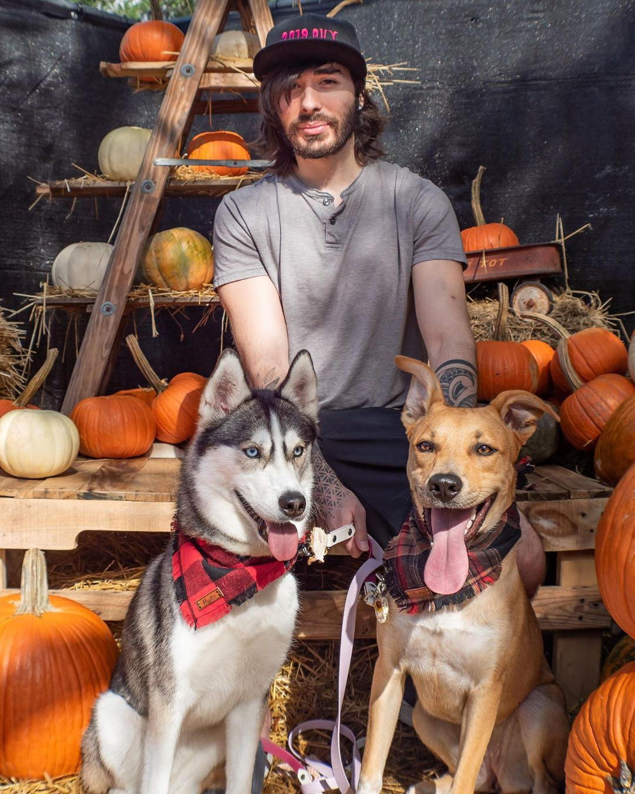
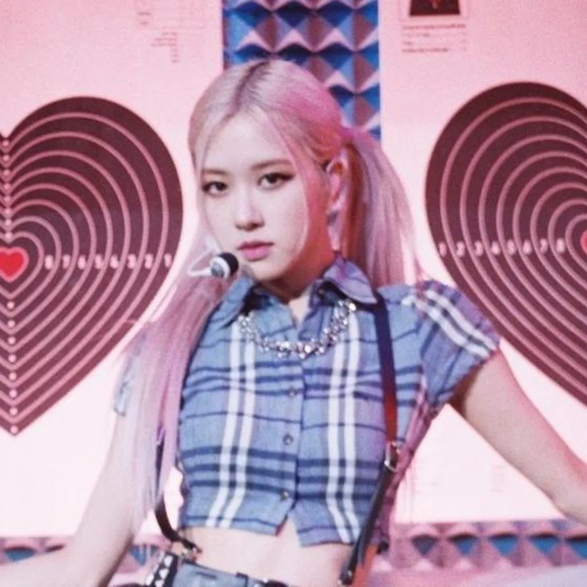

La Galerie 🖼️
Modern looks that will make you stand out from the others




Another trend that has continued to dominate this year has been pastel tones. These sorbet-inspired colors are the perfect option for summer and they suit a wide variety of skin tones. Choose from a boiler suit in cool mint green or an oversized trench coat in soft lavender – better yet, try them both simultaneously. Suits and separates in the soft and buttery hues elevate your overall aesthetic and will remain one of the chicest styles for seasons to come.
Takng inspiration from the 50s and the 60s, this sleek fashion trend is coming back in a big way. Headscarves protect your hair and add a finishing touch to your outfit without overdoing it. Choose from a silky design with floral motifs or intricate patterns, or keep it simple with bold colors and block letters. When styling this accessory, you can wrap the fabric under your chin in a loose knot, or have it hanging off the back of your head – mix things up by wrapping it around your neck or let it dangle from your bag. Channeling your inner Grace Kelly has never been easier with this classic go-to item.
This season yellow bags have taken over the runways and the streets. This trend is easy to replicate and it is timeless – choose a small clutch to spice up an outfit or find a mustard tote for your daily needs. There are so many shades to choose from that suit your taste, and they look incredible when paired with other vibrant hues or a monochromatic ensemble. Opt for an amber structured handbag with an all-white get-up, or a sleek canary baguette for a night out
Go all out this season with these beautiful and intricate folk-inspired coats. When the temperature starts to drop, add some layers of delicate embroidery and lace to keep your outfit hot. The intricate tapestry on each piece of outerwear looks great with a monochrome black or brown ensemble, or choose it in a series of other colors for a bright and interesting choice. This trend is easy to style and looks fantastic on everybody.